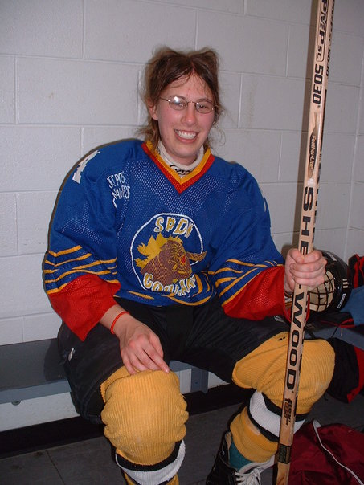

About
|  |
Hi! I'm Kiri Nichol. I'm a physicist, art forger and data scientist currently based in Vancouver, British Columbia. I have a Ph.D in physics and I've also done research in radiotherapy. And, yes, I'm currently a free agent looking for a team. I made Small Yellow Duck because I like to solve cool problems and to tell a story with data. I work in Python, but in past lives I worked with Matlab, Delphi, IDL, Fortran, C++, Maple and Mathematica. I like data in xml and SQL with a simple vinaigrette dressing.
|